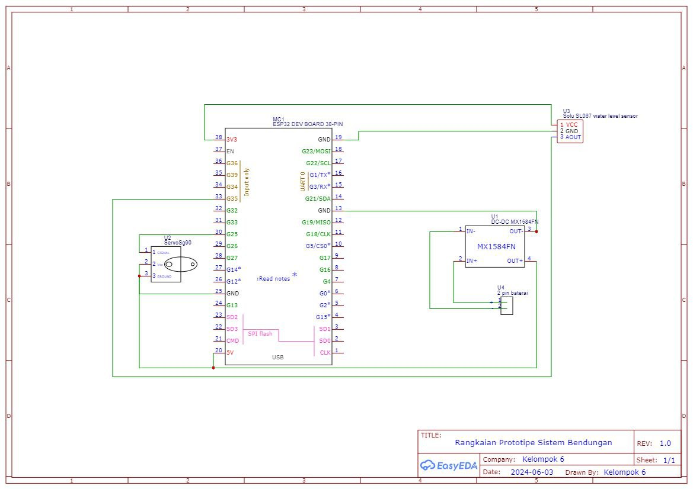
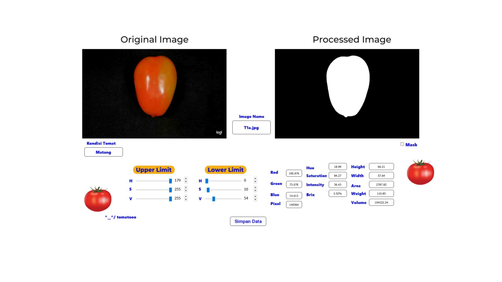
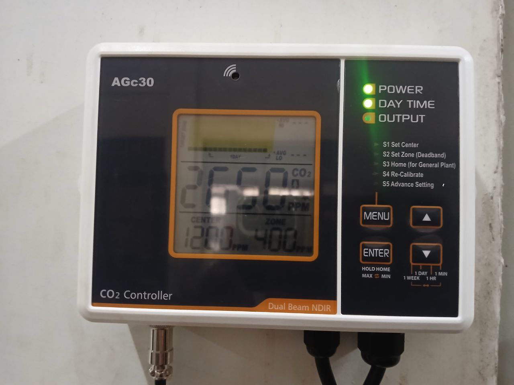
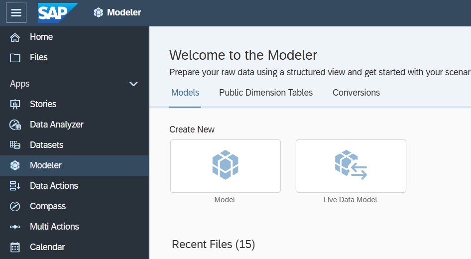

Internet of Things (IoT) for Dam Prototype
ESP32 & Blynk • 2024
A water level monitoring system using ESP32 microcontroller and Blynk platform.
Mechanical and Biosystem Engineering student, focused in Bioinformatics division. I'm exploring Internet of Things (IoT) and currently figuring out how data driven fuzzy logic systems work.
Some side quests that I have been doing so far.

ESP32 & Blynk • 2024
A water level monitoring system using ESP32 microcontroller and Blynk platform.

Python & OpenCV • 2025
An image processing techniques using RGB applied to biological samples to predict ripeness.

Fuzzy Logic System • Current
An environmental control system using fuzzy logic algorithms to maintain optimal CO₂ levels in controlled environments.

SAP Analytics Cloud • 2026
A not so very SAP journey, but I learned something: turning spreadsheet chaos into dashboards, stories, and predictive models without breaking a sweat (mostly).